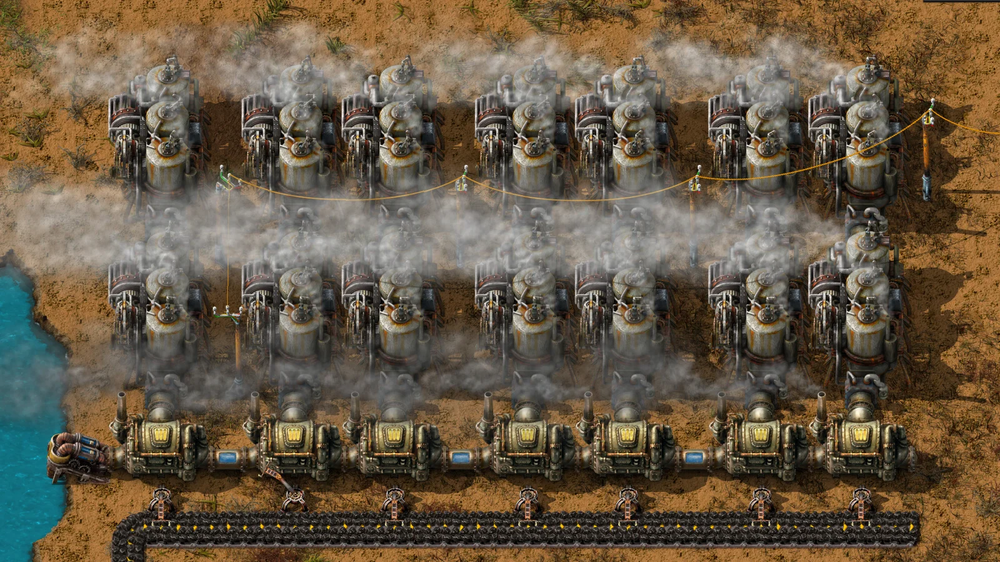
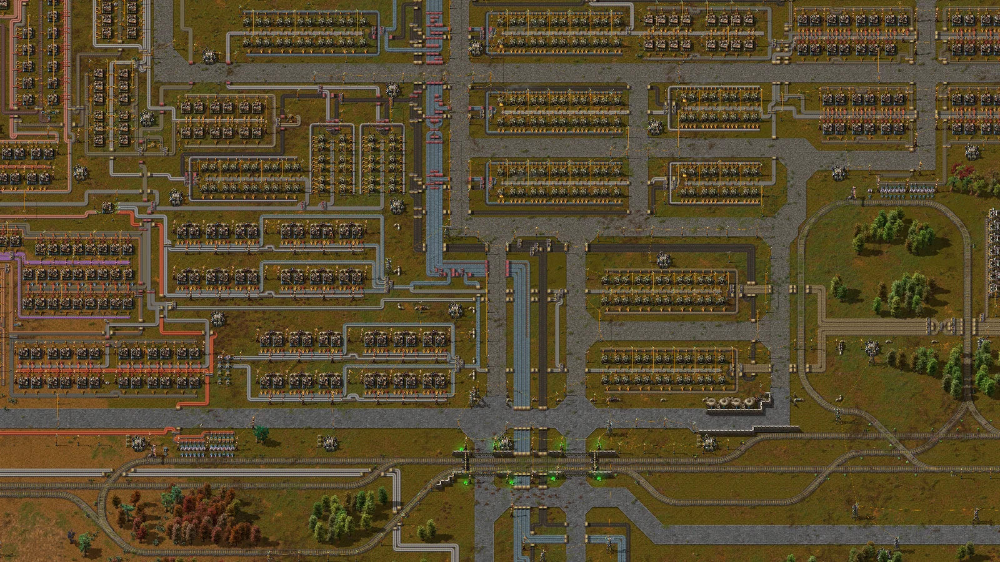
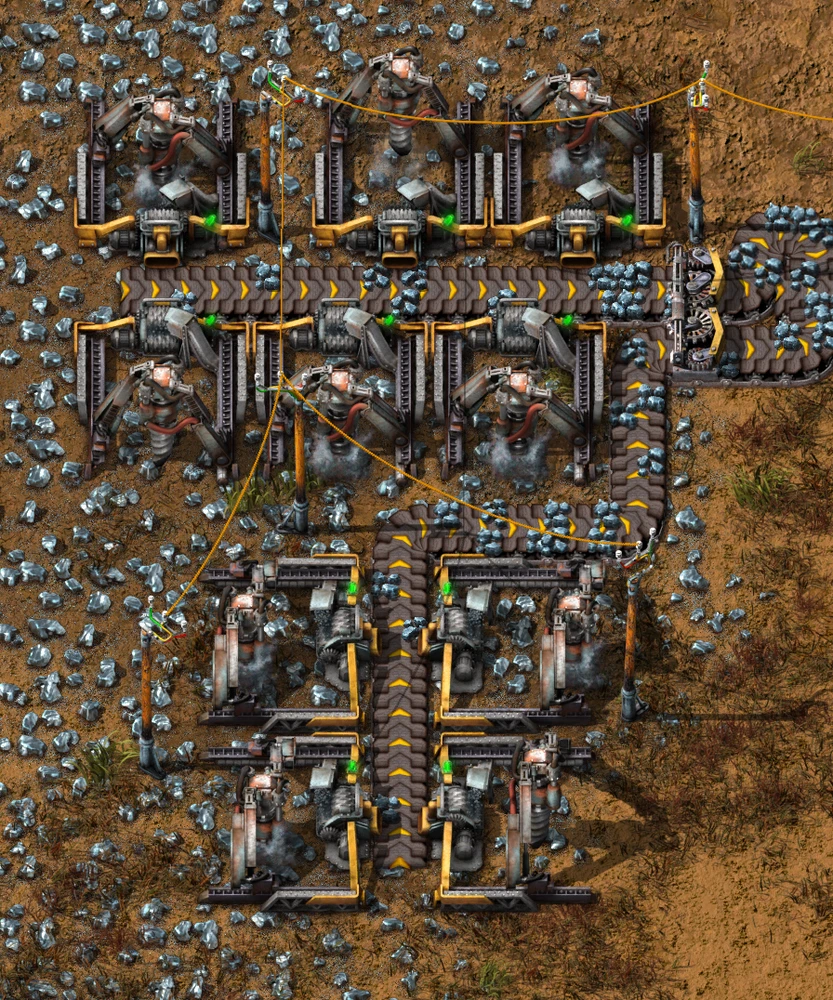
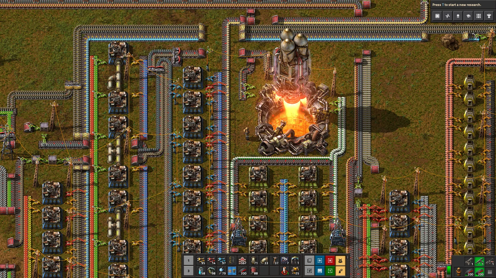

Reinforced Plate
2 Steel Plates + 5 Plastic Bars → 1 plate · 2 s · stack 100
YOUR FACTORIO. YOUR RULES.
Faster factories, new materials, your own machines. Describe your idea — MyModz builds your mod on the website, checks it in Factorio and gives you a ready-to-install ZIP.

FROM REQUEST TO GAME RESULT
Turn a new material into a production chain: its recipe, a furnace that uses it, and the research that unlocks both. All in one mod.

“Create a Reinforced Plate from steel and plastic, then create a Reinforced Furnace that uses 10 of them.”
2 Steel Plates + 5 Plastic Bars → 1 plate · 2 s · stack 100
Electric Furnace + 10 Reinforced Plates + 5 Processing Units · speed 4
Unlocks the new material and furnace through research.
This content chain passed real Factorio validation.Items, recipes, values and research unlocks verified.
WHAT YOU CAN BUILD
Speed up production, rethink recipes or add your own content. Combine supported changes into one mod.

Use fewer ingredients, craft faster, change output amounts or carry bigger stacks of supported items.
Add materials, alternative recipes and machines based on supported templates. Connect them into a new production chain.
Adjust supported research costs and prerequisites. Choose the technology that unlocks your new content.
FROM IDEA TO YOUR MODS FOLDER
Write a request, see the changes and download your mod. Come back to your history whenever you want to refine it.
Write the requestOne idea or several changes together.
Watch the build statusQueued → Build + check → Ready.
See exactly what changesSee what the mod actually changes before download.
Download the ZIPPut it in Factorio/mods without unpacking.
Double electric mining drill speed and lab research speed.

CONFIDENCE BEFORE DOWNLOAD
MyModz loads your mod in real Factorio 2.0.77 and checks its items, recipes, values and research against the accepted request. You get the ZIP only after these checks pass.
If your request goes beyond the supported features, MyModz explains the limit instead of quietly leaving part of your idea out.
Validation covers base-game Factorio 2.0.77. Compatibility with other mods or Space Age needs a separate in-game check.
FOLLOW-UP EDITS
Start from a mod you’ve already created. Describe what to change — the new version is built and checked again, while the original stays in your history.
“Keep everything else, make the furnace another 25% faster and restore Automation cost.”
WHAT WORKS TODAY
Build within the supported Factorio 2.0 features. The site tells you when an idea goes beyond them.
FAQ
A few things to know before you turn your idea into a mod.
No. MyModz is a web service. You use the website to create and revise mods; the only file you download is the resulting Factorio mod ZIP.
No. Describe what you want in English or Russian. MyModz handles the supported changes, creates the mod files and checks the result.
Yes. The mod is loaded in isolated base-game Factorio 2.0.77. Its items, recipes, values and research are checked against the accepted request before download.
New machines use the graphics and icons of supported base-game templates. You can change their name, recipe and supported properties; new artwork isn’t generated.
No. Current validation proves the generated mod against isolated base-game Factorio 2.0.77. Third-party mod-stack compatibility still needs an in-game check.
Yes. Open a successful mod from your history and describe the next change. MyModz builds and checks a new version; your original remains available.
WHAT WOULD YOU CHANGE?
Start with one idea. Create it on the website, check the result and take your mod into Factorio.
Factorio stable 2.0.x · EN / RU · validated against 2.0.77